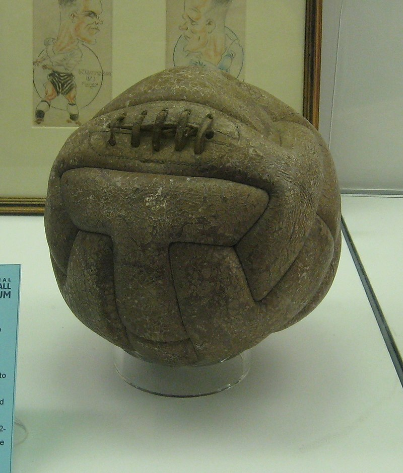

The earliest form of the game was in China two or three centuries BC, when it was recorded as an exercise in a military manual. However, it was England who started to develop the sport we all know and love today. The English were the ones who created the first rules of the game, such as not being able to handle the ball with your hands. It was in the 1800’s when the sport rose to popularity and spread to the rest of the world. In 1863, the Football Association (FA) was formed in England and the very first set of rules were established. In 1904, the Fédération Internationale de Football Association (FIFA) was founded, and 3 decades later countries and their own leagues which consisted of multiple soccer teams. The very first FIFA World Cup was hosted by Uruguay from July 13 to July 30, 1930. You can find out more here
 It was in the twentieth century when most soccer balls were made by rubber. Before this, soccer balls were dependant on the shape and size of a pig’s bladder, which presented problems for the players as the ball would rarely go where they were meant to. In 1872, soccer balls were supposed to be spherical with a circumference of 27 to 28 inches (68.6 to 71.1 centimeters), with a weight of 13-15 ounces (368.5 to 425.2 pounds). As time went on, soccer balls became stronger, more durable, and more stylish. Listed below are the requirements of size 5 balls, which are used in professional matches but can also be used by kids 11 years or older. For smaller sized balls, requirements are slightly different. For more information visit this informative website.
Listed below are some of the requirements each soccer ball should meet.
Ever since soccer rose to global popularity, there have been many great players who have graced the field. Some of these players are Pelé, Maradona, Zidane, Ronaldo (Brazilian), Johan Cruyff, Ronaldinho, etc. Often when discussing the best player in the history of soccer, Pelé, Maradona, and Cruyff often come to mind first. Opinions vary from person to person, but generally these 3 players are the highest on the list. However, all of the players I have mentioned are retired players. Players like Cristiano Ronaldo and Lionel Messi are curent soccer players who are two of the most talked about athletes not only in soccer, but in all of sports.
Like every other sport, soccer has many competitions that make it such an exciting sport to watch. Some of these competitions include the FIFA World Cup, the Champions League, and the FIFA Club World Cup.
The World Cup is without a doubt the biggest competition in soccer, as well as the most viewed sporting event in the entire world. For any soccer play, winning the FIFA World Cup is the ultimate accomplishment. The World Cup is only for international teams, as opposed to the FIFA Club World Cup which is only for certain clubs. The very first World Cup was in 1930 and was hosted in Uruguay. The World Cup takes place every 4 years. In 2010, 3.2 billion people viewed the competition worldwide!
Every 4 years one country is crowned the winner of the arguably the most prestegious competiton in the entirety of sports, the FIFA World Cup. Listed below are some of the previous winners of this competition.
To view a list of all of the winners since 1930, click here